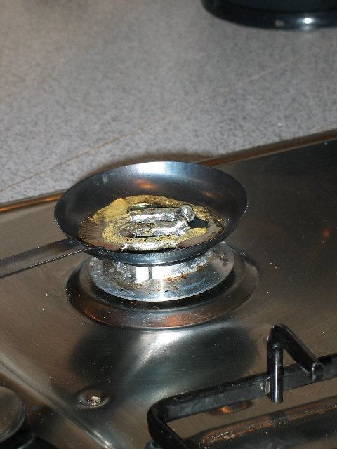

Melting Tin

The Finnish family in the Chalet had brought some tin with them to take part in the New Year fortune telling using tin to heat up and then pour into a bucket of cold water, using the shapes that are created to tell the fortune for the coming year.
From Turmelu: "Finns predict the future in the New Year night. A piece of tin is heated in the fireplace until it melts. After that, it is poured into a bucket of cold water where the tin cools down and gets its shape. The tin is then interpreted by looking at its shadow. The tin can, for example, resemble a boat, and it is predicted that the person who got the tin, is going on a holiday during the next year. Or if there are lots of crumbs on the surface of the tin, it may mean money and wealth in the person's life during the coming year."
Add a comment
| EXIF


Copyright © Jane Dallaway. Terms of Use